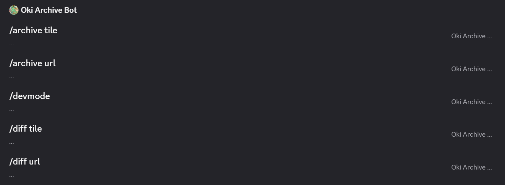

大まかな利用方法
沖ノ鳥サーバーでは、基本的に「oki-archive-bot用」チャンネルで使用してください。「/」を入力して「Oki Archive Bot」を選択すると、利用できるコマンドの一覧が表示されます。

Discordから沖ノ鳥周辺のアーカイブを呼び出したり、2つの時点の差分画像を生成したりできるBotです。
← 制作物一覧に戻る沖ノ鳥サーバーでは、基本的に「oki-archive-bot用」チャンネルで使用してください。「/」を入力して「Oki Archive Bot」を選択すると、利用できるコマンドの一覧が表示されます。

タイル座標を指定してアーカイブを取得します。
/archive tile x: y: [time:]
x, y — タイルX座標・Y座標（マーブル系に表示）
time — 時間指定。未指定の場合は3時間前。時間前は *h、日前は *d、か月前は *m
wplaceのURLを指定してアーカイブを取得します。
/archive url url: [time:]
url — wplaceでピクセル選択時に「Share」から取得できるURL
time — 上記と同じ形式で時間を指定
タイル座標を指定して、2つの時点の差分画像を生成します。
/diff tile x: y: time1: time2:
x, y — タイルX座標・Y座標
time1, time2 — 比較元と比較先の時間。入力形式はtimeと同じ
wplaceのURLを指定して、2つの時点の差分画像を生成します。
/diff url url: time1: time2:
url — wplaceの共有URL
time1, time2 — 比較元と比較先の時間
これらのコマンドは開発者向けです。実行権限はひろかわびーちのみが持っています。権限が必要な場合はお知らせください。
開発者モードのON / OFFを切り替えます。
/divmode
開発者モードがONのときだけ使える簡易テストコマンドです。
/test x: y: [time:]